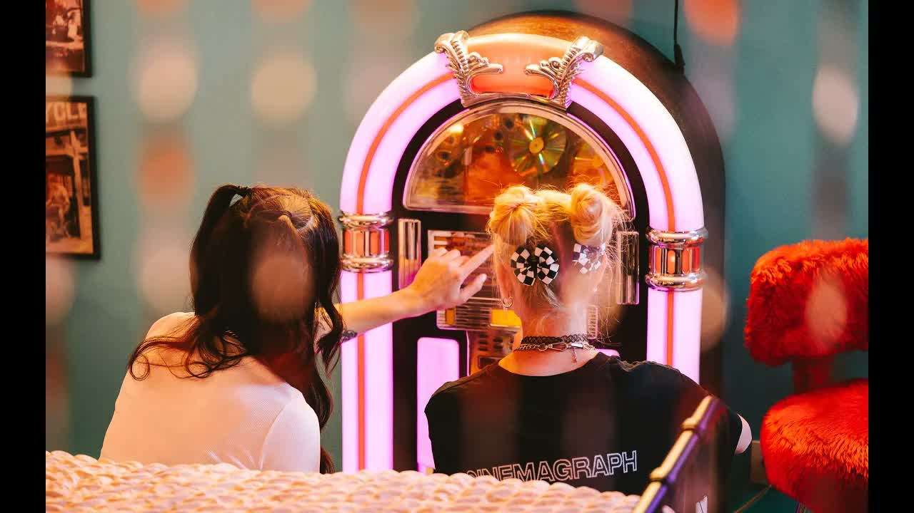

Review
NEVVER - Flawed From The Get-Go

Ein wenig Pop-Punk gefällig?
Alles klar.
Kommt.
Ich weiß.
Eigentlich müsste ich jetzt so tun, als wäre ich viel zu hart für sowas.
Als würde ich nur Musik hören, bei der mindestens drei Menschen gleichzeitig schlecht gelaunt in rostige Mikrofone brüllen.
Mach ich aber nicht.
Weil NEVVER mir da ziemlich schnell einen Strich durch die schlecht gelaunte Rechnung machen.
Schon der Einstieg hat etwas angenehm Nostalgisches.
Nicht im Sinne von "früher war alles besser".
Eher wie dieser Moment, wenn man vor einem alten Arcade-Automaten steht, Pac-Man blinkt einen an und man plötzlich wieder denkt:
"Ach komm. Eine Runde geht noch."
Das Video tut seinen Teil dazu.
Bunte Farben.
Retro-Vibes.
Schöne Bilder.
Und ja:
Das Color Grading gefällt mir.
Ich schreibe das nicht nur, weil es wichtig klingt, sondern auch als kleiner Insider. Wer die Gitarristin schon einmal in anderen Formaten erlebt hat, dürfte bei dem Begriff vermutlich kurz grinsen. Das Wort fiel da ungefähr so oft wie bei anderen Leuten "Prost".
Musikalisch ist "Flawed From The Get-Go" genau dieser Pop-Punk, bei dem man sich erst dagegen wehren möchte und dann doch mit dem Fuß wippt.
Schlicht.
Hüpfbar.
Melodisch.
Mit genug kleinen Breaks und Übergängen, damit es nicht einfach nur glatt durchrutscht.
NEVVER klingen dabei nicht wie eine Band, die sich am Reißbrett überlegt hat, wie man möglichst schnell in irgendwelche Sommer-Playlists gespült wird.
Da ist mehr Leben drin.
Mehr Freude.
Mehr "wir haben Bock auf den Kram".
Und das hört man.
Früher hießen NEVVER übrigens The Dirty Basements.
Nach einer Umstrukturierung wurde daraus NEVVER.
Mit zwei V.
Ja, das muss man dazusagen, sonst tippt wieder irgendein armer Mensch brav "Never" ein und landet sonst wo.
Inhaltlich passt "Flawed From The Get-Go" ziemlich gut zum Titel der Debüt-EP Heart On Your Sleeve.
Herz auf dem Ärmel tragen.
Also Gefühle nicht irgendwo in den Keller sperren, bis sie anfangen zu schimmeln, sondern raus damit.
Unsicherheiten.
Neuanfänge.
Macken.
Narben.
Der ganze schöne Mist, den man sonst gerne hinter Ironie, lauten Gitarren oder einem viel zu großen Ego versteckt.
Zeilen wie
"All that we are, we are lost and we're broken"
oder
"Carry the scars on our skin like a token"
könnten schnell in Richtung Gefühlskirmes kippen.
Tun sie aber nicht.
Dafür ist der Song zu leichtfüßig.
Zu wach.
Zu sehr damit beschäftigt, gleichzeitig verletzlich und gut gelaunt durch die Gegend zu springen.
Wer Vergleiche braucht, bekommt einen:
Mich erinnert das stellenweise an Go Betty Go.
Nicht als Kopie.
Eher vom Gefühl her.
Diese Mischung aus Lebensfreude, Melodie und Inhalt, ohne dass einem direkt Zuckerwatte aus den Ohren läuft.
Und genau das mag ich daran.
NEVVER machen Pop-Punk, der nicht peinlich um Jugendlichkeit bettelt.
Der Song wirkt frisch, ohne so zu tun, als hätte er gerade zum ersten Mal eine Gitarre gesehen.
Die EP Heart On Your Sleeve soll laut Band genau dort ansetzen: bei offenen Gefühlen, Unsicherheiten, frischen Starts und der Erkenntnis, dass man mit den eigenen Macken vielleicht gar nicht so kaputt ist, wie man manchmal denkt.
Kann man jetzt natürlich fürchterlich erwachsen finden.
Oder man stellt sich einfach vor einen alten Automaten, wirft gedanklich eine Münze ein und lässt den Refrain nochmal laufen.
So.
Jetzt reicht es aber auch mit Pop-Punk für heute.
Sonst fange ich am Ende noch an, gut gelaunt durch die Wohnung zu hüpfen.
Und das möchte wirklich niemand sehen.
Das Video zu "Flawed From The Get-Go" könnt ihr euch hier reinziehen:
NEVVER - Flawed From The Get-Go
Mehr zur Band gibt es auf nevver.de und über den NEVVER-Linktree.